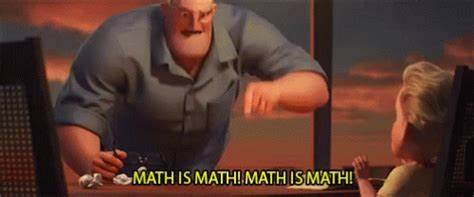

Datatypes & Operations
Variables can store different datatypes, like integers, characters, and lists. Operations are how we can modify those datatypes, for instance dividing integers and concatenating characters or lists.
Basic datatypes
| Datatype | Examples |
|---|---|
| Constants | True, False, None |
| Integer | 3, 9, 100000 |
| Float | 3.1415926, -2.34 |
| Boolean | 2<3, "c" in "ace" |
| Character | "4", "d", "P", "*" |
| String | "Bob the Builder!", "Jesse Chan" |
| List | [1, 2, 3], ["hi", 4, True] |
| Tuple | (1, 2, 3), ("hi", 4, True) |
In addition, Python has other datatypes like sets and dictionaries. These, along with strings, lists, and tuples, will be explored in later chapters. If you want to know what datatype a variable "x" is, you can look it up with type(x)
Basic operators
| Category | Operators |
|---|---|
| Arithmetic | +, -, *, /, //, **, % |
| Relational | <, <=, >=, >, ==, != |
| Logical | and, or, not |
| Bitwise | <<, >>, &, |, ^, ~, &=, |=, ^= |
Note that we will not be using the last category (bitwise) of operators in this course. You might encounter them when learning other languages like C or Java, but they are used much less in Python.
Arithmetic in Python
Arithmetic in Python is relatively straightforward, and adheres to most of the rules we're familiar with--for example, we can't divide anything by 0, and Python handles this by crashing. However, Python does introduce three operator representations you probably aren't familiar with.
First off is integer division, represented by the "//" symbol. Think about dividing with remainders--for instance, 17 divided by 15 can be represented as 1 with a remainder of 2. Integer division keeps only the non-remainder portion when dividing.
On the other hand, the modulus operator "%" returns only the remainder portion.
Lastly, "to the power of" is represented with "**". For instance, 2**2 is equivalent to 2 to the power of 2, i.e. 4.
Some examples:
A quick mathematical fact--a%b is equal to (a-(a//b)*b)! You can verify this on different numbers.
Something else to take note of is operator precedence and associativity. Say you run 3+4*5/6. Which operation is run first? Addition? Division? It turns out that, as aforementioned, Python adheres to normal mathematical rules:
Floating point approximation
Python uses something called floating point approximation to approximate the values of fractions. The issue with this is that the approximations are not going to be 100% matching. Consider the fraction 1/3. It can be represented as 0.33333333 and onwards--an infinitely repeating decimal. Computer programs have limited memory, so we can't actually represent anything in infinite space.
Let's try an example:
Note: Our online code-running interface sometimes runs Python 2 instead of Python 3--normally, you only need one float() around the entire fraction to see the same results.
Short circuit evaluation
When we deal with logical operators, Python will evaluate them sequentially from left-to-right. So, for instance, if we have a statement like "True or False", Python will read "True" first, and since it's an or statement, it will immediately evauate to True without even looking at the "False" part.